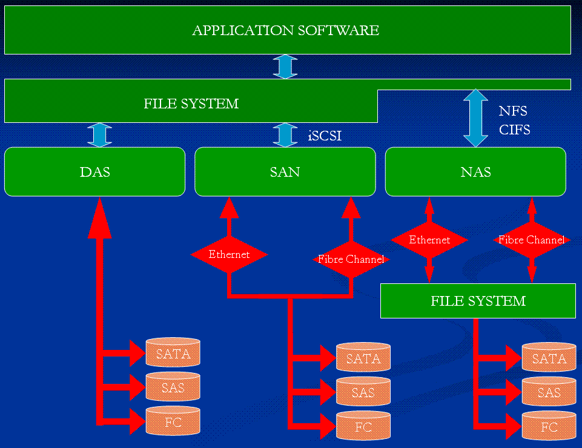
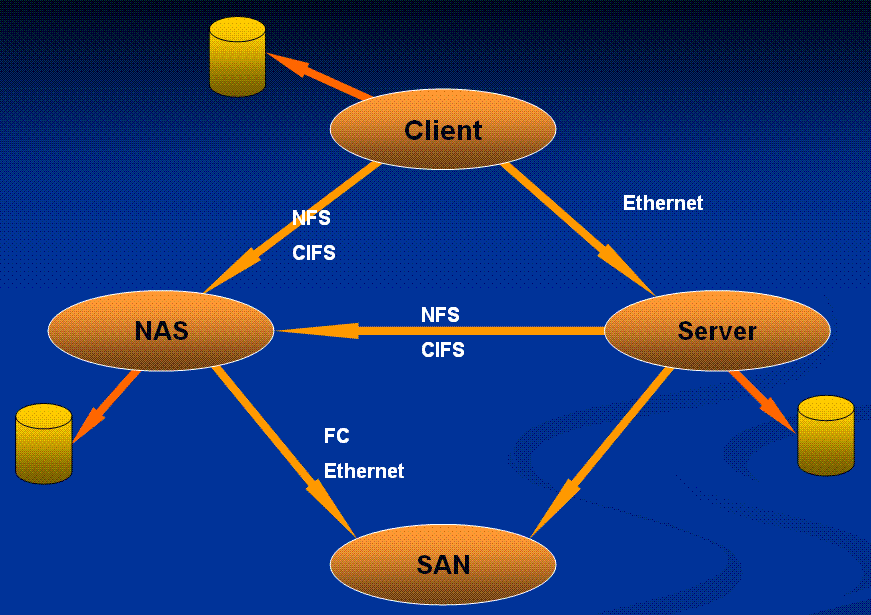
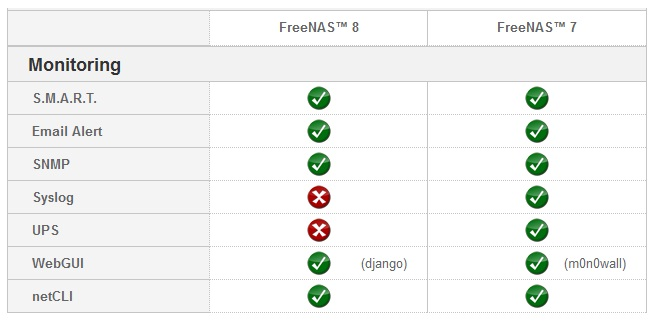

感謝您對「自由軟體鑄造場」的支持與愛護，十多年來「自由軟體鑄造場」受中央研究院支持，並在資訊科學研究所以及資訊科技創新研究中心執行，現已完成階段性的任務。 本網站預計持續維運至 2021年底，網站內容基本上不會再更動。
也紀念我們永遠的朋友 李士傑先生（Shih-Chieh Ilya Li）。
也紀念我們永遠的朋友 李士傑先生（Shih-Chieh Ilya Li）。
利用 FreeNAS 打造儲存設備(1)－歷史篇
Created at Wednesday, 03 August 2011 17:10 Last Updated on Friday, 03 February 2012 14:50
前言
目前企業運作環境中對於共用儲存設備的存取方式，大約可以區分為三種類別，分別是：直接連接儲存 (Direct Attached Storage, DAS)、網路連接儲存 (Network Attached Storage, NAS)、儲存區域網路 (Storage Area Network，SAN)。其中儲存區域網路 SAN 又因為其所使用的傳輸媒體介質的不同，又可以細分為使用光纖作為傳輸媒介的 (Fiber Channel SAN, FC-SAN)，以及使用一般乙太網路線材的 (iSCSI SAN, IP-SAN)。
不過目前商用市場及自由軟體專案中，許多的 NAS 設備除了既有的網路服務之外，同時具備了 iSCSI Target 的功能，因此可以提供 IP-SAN 的儲存環境也搖身一變，成為 SAN 設備。目前市場上 NAS 與 SAN 在界線劃分上已經日趨模糊，讀者可以從圖1、圖2 了解到 DAS、NAS、SAN 此三種共用儲存設備，對於應用程式 (Application)、檔案系統 (File System)、硬碟 (SATA、SAS、FC)、線材 (Fiber Channel、Ethernet) 等，在存取方式上的差異性，圖3 則為 NAS 與 SAN 的混合應用。在本次 FreeNAS 系列文章中所使用的 FreeNAS 雖然定位為 NAS，但它也可以提供 iSCSI Target 功能，來給予使用者更具彈性的應用。

▲ 圖1 DAS、NAS、SAN 存取方式比較一。Lore uni 分享，採用 CC-BY-SA 3.0 Unported 與 GFDL 雙重授權

▲ 圖3 SAN-NAS 混合應用。Lore uni 分享，採用 CC-BY-SA 3.0 Unported 與 GFDL 雙重授權
FreeNAS 為基於 FreeBSD 作業系統所開發的嵌入式 (Embedded) 開放原始碼網路連接儲存設備 (Network Attached Storage,NAS)，由 Olivier Cochard-Labbe 及 Volker Theile 於 2005 年時所發起。二人發起該專案計畫後也同時身兼 FreeNAS 計畫的核心開發成員。FreeNAS 的開發設計框架採用 Olivier Cochard-Labbe 參與的另一套知名嵌入式開放原始碼計畫專案，也就是一 PHP 語言所開發的嵌入式防火牆解決方案 m0n0wall。FreeNAS 以 BSD 授權方式釋出。
但是於 2009 年 12 月時 FreeNAS 主要開發成員 Olivier Cochard-Labbe 發表聲明，聲明內容為從 FreeNAS 0.7 版開始該計畫將停止開發任何新功能，也就是除了修正重大臭蟲之外，其餘開發計畫皆停止。Olivier Cochard-Labbe 表示他實在無法抽出足夠的時間繼續為 FreeNAS 開發新功能。
此時另一位 FreeNAS 專案計畫的核心開發成員 Volker Theile，則是將 FreeNAS 計畫的相關功能轉換到他習慣的日常工作環境 Debian Linux 上重新改寫，並且開啟了另一個開放原始碼專案計劃－OpenMediaVault，並且預計採用 GPLv3 授權方式釋出。
iXsystems 為提供 Unix-Like (Linux、BSD) 作業系統的硬體解決方案供應商，在 2009 年初時收購當時也是基於 FreeBSD 作業系統所開發，目標專注於桌面 (Desktop) 環境的作業系統 PC-BSD。該公司在 2009 年底時因為獲悉了 Olivier Cochard-Labbe 放棄繼續開發 FreeNAS 的聲明後，立即表示要接手 FreeNAS 計畫。雖然 iXsystems 公司加入，但是授權方式仍然維持原來的 BSD 授權方式釋出。
iXsystems 接手後發現 FreeNAS 雖然有很多非常棒的特色以及網路功能，但是由於在開發設計上的理念有所不同，造成原本的 FreeNAS 原始碼難以維護，因此 iXsystems 便決定將 FreeNAS 重新改寫，並且導入模組化設計 (Plug-ins) 概念。模組化設計理念除了提升日後在功能上擴充的便利性之外，對於有心幫助 FreeNAS 擴充新功能的熱心貢獻人士也有相當的助益。
因此重新改寫 FreeNAS 的工作便從 2010 年初緊鑼密鼓的展開，在嵌入式環境中改採用 NanoBSD 作為建立嵌入式環境的應用程式，同時在網頁框架 (Web Framework) 部份，也由原本使用 PHP 語言撰寫的 m0n0wall，改為採用 Python 語言撰寫的 Django 作為圖形化使用者操作介面。最後則是在版本命名方面則採用依 FreeBSD 作業系統版本命名方式，為 FreeNAS 進行命名，以便使用者在選擇 FreeNAS 版本時可以立即了解其所採用的 FreeBSD 作業系統版本。
整個 FreeNAS 改寫作業於 2011 年初大致完成，並且於同年 5 月 2 日正式發行 FreeNAS 8.0。由於是整個系統及架構進行重新改寫，因此在舊版本 FreeNAS 0.7 版中存在的功能在 FreeNAS 8.0 中不見得一定存在，例如：Bittorrent、WebServer 等，因為 FreeNAS 8.0 發行版本的首要任務為提供完整的 NAS 功能。對於非 NAS 原生功能，將預計於下一個發行版本也就是 FreeNAS 8.1，將會開始提供模組化擴充功能，屆時使用者便可以輕易的擴充他們想要的功能。
由上述我們可知 FreeNAS 8 承襲之前的精神，但實則為全新設計的嵌入式 NAS。同時由於 iXsystems 公司的加入，在各項改變中首先我們可以發現到 FreeNAS 0.7 與 FreeBSD 8 的標誌 (Logo) 有明顯不同（由 FreeBSD 紅色惡魔改為鯊魚）。初次使用 FreeNAS 的使用者首先會想問：這二個版本中該選那一個？在新版 FreeNAS 官網中 FreeNAS 版本比較頁面 FreeNAS™ Comparison Chart，有將舊版 FreeNAS 0.7 與新版 FreeNAS 8 在功能特性上做比較，讀者可以依自身所需要的網路服務需求選擇合適的版本。不過請注意由於新版 FreeNAS 8 是整個架構重新改寫，因此目前還不支援將舊有版本 FreeNAS 0.7 直接升級為新版 FreeNAS 8。
▲ 圖3 SAN-NAS 混合應用。Lore uni 分享，採用 CC-BY-SA 3.0 Unported 與 GFDL 雙重授權
什麼是 FreeNAS？
FreeNAS 為基於 FreeBSD 作業系統所開發的嵌入式 (Embedded) 開放原始碼網路連接儲存設備 (Network Attached Storage,NAS)，由 Olivier Cochard-Labbe 及 Volker Theile 於 2005 年時所發起。二人發起該專案計畫後也同時身兼 FreeNAS 計畫的核心開發成員。FreeNAS 的開發設計框架採用 Olivier Cochard-Labbe 參與的另一套知名嵌入式開放原始碼計畫專案，也就是一 PHP 語言所開發的嵌入式防火牆解決方案 m0n0wall。FreeNAS 以 BSD 授權方式釋出。
但是於 2009 年 12 月時 FreeNAS 主要開發成員 Olivier Cochard-Labbe 發表聲明，聲明內容為從 FreeNAS 0.7 版開始該計畫將停止開發任何新功能，也就是除了修正重大臭蟲之外，其餘開發計畫皆停止。Olivier Cochard-Labbe 表示他實在無法抽出足夠的時間繼續為 FreeNAS 開發新功能。
此時另一位 FreeNAS 專案計畫的核心開發成員 Volker Theile，則是將 FreeNAS 計畫的相關功能轉換到他習慣的日常工作環境 Debian Linux 上重新改寫，並且開啟了另一個開放原始碼專案計劃－OpenMediaVault，並且預計採用 GPLv3 授權方式釋出。
iXsystems 為提供 Unix-Like (Linux、BSD) 作業系統的硬體解決方案供應商，在 2009 年初時收購當時也是基於 FreeBSD 作業系統所開發，目標專注於桌面 (Desktop) 環境的作業系統 PC-BSD。該公司在 2009 年底時因為獲悉了 Olivier Cochard-Labbe 放棄繼續開發 FreeNAS 的聲明後，立即表示要接手 FreeNAS 計畫。雖然 iXsystems 公司加入，但是授權方式仍然維持原來的 BSD 授權方式釋出。
iXsystems 接手後發現 FreeNAS 雖然有很多非常棒的特色以及網路功能，但是由於在開發設計上的理念有所不同，造成原本的 FreeNAS 原始碼難以維護，因此 iXsystems 便決定將 FreeNAS 重新改寫，並且導入模組化設計 (Plug-ins) 概念。模組化設計理念除了提升日後在功能上擴充的便利性之外，對於有心幫助 FreeNAS 擴充新功能的熱心貢獻人士也有相當的助益。
因此重新改寫 FreeNAS 的工作便從 2010 年初緊鑼密鼓的展開，在嵌入式環境中改採用 NanoBSD 作為建立嵌入式環境的應用程式，同時在網頁框架 (Web Framework) 部份，也由原本使用 PHP 語言撰寫的 m0n0wall，改為採用 Python 語言撰寫的 Django 作為圖形化使用者操作介面。最後則是在版本命名方面則採用依 FreeBSD 作業系統版本命名方式，為 FreeNAS 進行命名，以便使用者在選擇 FreeNAS 版本時可以立即了解其所採用的 FreeBSD 作業系統版本。
整個 FreeNAS 改寫作業於 2011 年初大致完成，並且於同年 5 月 2 日正式發行 FreeNAS 8.0。由於是整個系統及架構進行重新改寫，因此在舊版本 FreeNAS 0.7 版中存在的功能在 FreeNAS 8.0 中不見得一定存在，例如：Bittorrent、WebServer 等，因為 FreeNAS 8.0 發行版本的首要任務為提供完整的 NAS 功能。對於非 NAS 原生功能，將預計於下一個發行版本也就是 FreeNAS 8.1，將會開始提供模組化擴充功能，屆時使用者便可以輕易的擴充他們想要的功能。
FreeNAS 0.7 vs FreeNAS 8
由上述我們可知 FreeNAS 8 承襲之前的精神，但實則為全新設計的嵌入式 NAS。同時由於 iXsystems 公司的加入，在各項改變中首先我們可以發現到 FreeNAS 0.7 與 FreeBSD 8 的標誌 (Logo) 有明顯不同（由 FreeBSD 紅色惡魔改為鯊魚）。初次使用 FreeNAS 的使用者首先會想問：這二個版本中該選那一個？在新版 FreeNAS 官網中 FreeNAS 版本比較頁面 FreeNAS™ Comparison Chart，有將舊版 FreeNAS 0.7 與新版 FreeNAS 8 在功能特性上做比較，讀者可以依自身所需要的網路服務需求選擇合適的版本。不過請注意由於新版 FreeNAS 8 是整個架構重新改寫，因此目前還不支援將舊有版本 FreeNAS 0.7 直接升級為新版 FreeNAS 8。
▲ 圖5 FreeNAS 8 標誌。採用 CC-BY 3.0 Unported 授權
在新舊版本功能比較表上，我們可以看到在新版 FreeNAS 8 中將非 NAS 原生功能，例如：Bittorrent、UPnP Server、iTuness/DAAP、WebServer 等功能取消，FreeNAS 官方將預計於下一版 FreeNAS 8.1 版中，以模組化擴充的方式來擴充相關功能，並且將 ZFS 檔案系統版本由原本舊版本的 v13 提升為 v15，若您選擇採用舊版也就是 FreeNAS 0.7 的話，您可以至舊版首頁查看相關資訊。

▲ 圖9 FreeNAS 7 及 FreeNAS 8 監控功能比較表。 採用 CC-BY 3.0 Unported 授權
明瞭全新改寫、設計及開發的 FreeNAS 8 歷史由來後，我們簡單的總結一下 FreeNAS 8 版本所支援的網路功能及相關特色：
* 文件共享機制：支援 NFS / CIFS / AFP / FTP / TFTP 等網路服務
* 儲存區域網路：支援 iSCSI Target / Initiator 的 IP-SAN 儲存環境
* 使用者驗證：支援 Local / Active Directory / LDAP 等使用者驗證方式
* 檔案系統：
** 支援 UFS2 檔案系統（包括 Gmirror / Gstripe / Graid3）
** 支援 ZFS 檔案系統（包括 配額 Quotas / 快照 Snapshots / 壓縮 Compression / 同步複製 Replication / Zpool v15）
* 版本升級：升級過程為透過 NanoBSD Inactive 機制，因此即使升級失敗屆時也能輕易回復。
* 告警機制：支援 LSI 磁碟陣列控制器事件自動通知機制（需搭配 E-Mail 服務進行設定）。
* 開發框架：採用 Python 語言開發的網頁框架 Django 作為圖形化使用者操作介面。
在整體硬體支援度方面，由於 FreeNAS 8.x 版本皆是基於 FreeBSD 8.2 環境進行開發，因此在系統架構上支援 amd64、i386、ia64、pc98、powerpc、sparc64，其它硬體支援度方面，例如：Disk Controllers、Ethernet、USB 等硬體支援程度上均非常全面。比較令人驚喜的地方為支援大部份 10Gbps 網路卡，如此一來屆時採用 ZFS 檔案系統並且配合 iSCSI Target 提供 IP-SAN 儲存環境，來作為企業營運也是非常適合的儲存解決方案，一點也不遜色於商用設備解決方案。簡言之，原則上只要您的硬體設備符合 FreeBSD 8.2 的硬體相容清單 HCL (Hardware Compatability List) 中所條列，即可順利安裝 FreeNAS 並且不用擔心硬體驅動的問題。
在系統架構方面，FreeNAS 目前支援主流的 32 位元 (i386) 及 64 位元 (amd64) 架構，若您希望 FreeNAS 具備較高的傳輸速度及系統效能，則建議您採用 64 位元版本。若是您決定採用的是 32 位元版本，由於 32 位元系統架構會有記憶體 4GB 的定址限制（雖然有方法可以突破此限制，但不建議如此），強烈建議您應該要採用 UFS 檔案系統較為恰當（也就是不建議使用 ZFS 檔案系統）。
若決定採用 ZFS 檔案系統則表示您的硬體設備至少應該具備 6GB 以上閒置的記憶體空間，也就是說您的硬體設備至少需要 8GB 的記憶體，如此一來在運作 ZFS 檔案系統時，才能得到令人滿意的效能及傳輸速度。當然屆時 FreeNAS 運作的整體效能跟您的硬體設備實體記憶體將成正比（當然是實體記憶體愈多愈好！）。當 ZFS 檔案系統所負責處理的硬碟空間超過 6TB 容量時，就經驗法則來說，建議每多 1TB 硬碟空間就應增加 1GB 的實體記憶體。最後則應避免 ZFS RAIDZ 與硬體磁碟陣列卡 (RAID Controller) 二者互相混用的情況發生。您應該要將實體磁碟陣列設定在 JBOD 模式，而讓 ZFS 檔案系統來專心處理 RAID 部份。
在安裝空間方面，FreeNAS 為嵌入式的設計理念，因此您可以將 FreeNAS 安裝在 2GB 空間的 CF / USB 儲存裝置上，當然您也可以把 FreeNAS 安裝在硬碟上（但官方並不建議如此）。FreeNAS 在安裝時會將作業系統切割為二個 1GB 的分割區，其中一個分割區負責存放運作中的 FreeNAS 作業系統，而另一個分割區則是升級版本時會使用到。這樣的分割存放設計概念，可以確保您能順利升級至新的 FreeNAS 版本作業系統，或者當遇到升級問題時，也能輕鬆回復到先前穩定運作的版本，因此若您將 FreeNAS 安裝於硬碟上，將造成無法使用其它的剩餘空間。
為何官方不建議將 FreeNAS 8 安裝於硬碟中？ 舉例來說若您將 FreeNAS 8 安裝於 1TB 容量的硬碟中，雖然實際使用不到 2GB 的空間，但您仍無法使用剩餘的空間 (Inaccessible) 來做為分享資料用，這也正是 FreeNAS 官方不建議將 FreeNAS 安裝於硬碟上的主要原因。而這也是舊版 FreeNAS 0.7 使用者一開始便會碰到的問題，因為同樣的情況在舊版 FreeNAS 0.7 的設計中，若使用 1TB 容量的硬碟來安裝 FreeNAS 後仍可使用剩餘的所有空間（也就是 900 多 GB 的剩餘空間），並且可以使用該空間來進行檔案分享的作業。
您可以在 Sourceforge FreeNAS-8 專案頁面中下載最新版本的 FreeNAS，在下載頁面中您可以看到 32 位元 (i386) 及 64 位元 (amd64) 系統架構的下載檔案。若您要使用舊版的 FreeNAS 0.7（現改名為 FreeNAS 7）也可在此頁面中找到。
新版的 FreeNAS 8 的每種系統架構中都各有三個檔案可供下載，分別是 .iso、GUI_upgrade.xz、Full_Install.xz，這三個檔案其所代表的意義說明如下：
* .iso：ISO 映像檔，下載 ISO 映像檔後您可以將它燒錄至 CD / DVD 光碟片中，並且將硬體設備 BIOS 設定開機順序為光碟開機後即可進行安裝。
* GUI_upgrade.xz：升級用韌體檔案 (Firmware)，此一韌體檔案適合使用於登入 FreeNAS 圖形化操作介面後，不需要進行檔案解壓縮的動作，即可升級 FreeNAS 版本。
* Full_Install.xz：完整安裝映像檔案，使用此一檔案安裝，通常是沒有光碟機的情形，或者想預先將此安裝映像檔案寫入至 CF / USB 儲存裝置後，將硬體設備 BIOS 設定開機順序為 CF / USB 儲存裝置進行開機。
本文至此，相信讀者們已大致了解新版 FreeNAS 8 的歷史由來、硬體需求、特色功能以及選擇合適的安裝檔案，同時也與舊版的 FreeNAS 0.7 進行功能特色的分析比較，再來則是由於新版 FreeNAS 在設計架構上與舊版不同。因此若是想要將新版 FreeNAS 8 安裝於伺服器的硬碟之中，雖然您仍然可以正常操作 FreeNAS，但是您將無法儲存任何資料在 FreeNAS 系統中，這是舊版 FreeNAS 使用者對於新版 FreeNAS 最不適應的地方。
在下一篇文章中，筆者將會帶領讀者實作 FreeNAS 8 各種不同的安裝方式，例如：從光碟片安裝、從 USB 安裝等方式。而安裝 FreeNAS 8 之後首先會進行相關的初始化設定，例如：指定使用的網路卡、設定 IP 位址及相關資訊、主機名稱 (Hostname) 等，以及實作版本升級，將目前僅能使用單一英文語系操作介面的 FreeNAS 8.0 版本升級至支援多國語系操作介面的 FreeNAS 8.0.1 版本。
▲ 圖9 FreeNAS 7 及 FreeNAS 8 監控功能比較表。 採用 CC-BY 3.0 Unported 授權
FreeNAS 8 支援功能
明瞭全新改寫、設計及開發的 FreeNAS 8 歷史由來後，我們簡單的總結一下 FreeNAS 8 版本所支援的網路功能及相關特色：
* 文件共享機制：支援 NFS / CIFS / AFP / FTP / TFTP 等網路服務
* 儲存區域網路：支援 iSCSI Target / Initiator 的 IP-SAN 儲存環境
* 使用者驗證：支援 Local / Active Directory / LDAP 等使用者驗證方式
* 檔案系統：
** 支援 UFS2 檔案系統（包括 Gmirror / Gstripe / Graid3）
** 支援 ZFS 檔案系統（包括 配額 Quotas / 快照 Snapshots / 壓縮 Compression / 同步複製 Replication / Zpool v15）
* 版本升級：升級過程為透過 NanoBSD Inactive 機制，因此即使升級失敗屆時也能輕易回復。
* 告警機制：支援 LSI 磁碟陣列控制器事件自動通知機制（需搭配 E-Mail 服務進行設定）。
* 開發框架：採用 Python 語言開發的網頁框架 Django 作為圖形化使用者操作介面。
FreeNAS 硬體需求
在整體硬體支援度方面，由於 FreeNAS 8.x 版本皆是基於 FreeBSD 8.2 環境進行開發，因此在系統架構上支援 amd64、i386、ia64、pc98、powerpc、sparc64，其它硬體支援度方面，例如：Disk Controllers、Ethernet、USB 等硬體支援程度上均非常全面。比較令人驚喜的地方為支援大部份 10Gbps 網路卡，如此一來屆時採用 ZFS 檔案系統並且配合 iSCSI Target 提供 IP-SAN 儲存環境，來作為企業營運也是非常適合的儲存解決方案，一點也不遜色於商用設備解決方案。簡言之，原則上只要您的硬體設備符合 FreeBSD 8.2 的硬體相容清單 HCL (Hardware Compatability List) 中所條列，即可順利安裝 FreeNAS 並且不用擔心硬體驅動的問題。
在系統架構方面，FreeNAS 目前支援主流的 32 位元 (i386) 及 64 位元 (amd64) 架構，若您希望 FreeNAS 具備較高的傳輸速度及系統效能，則建議您採用 64 位元版本。若是您決定採用的是 32 位元版本，由於 32 位元系統架構會有記憶體 4GB 的定址限制（雖然有方法可以突破此限制，但不建議如此），強烈建議您應該要採用 UFS 檔案系統較為恰當（也就是不建議使用 ZFS 檔案系統）。
若決定採用 ZFS 檔案系統則表示您的硬體設備至少應該具備 6GB 以上閒置的記憶體空間，也就是說您的硬體設備至少需要 8GB 的記憶體，如此一來在運作 ZFS 檔案系統時，才能得到令人滿意的效能及傳輸速度。當然屆時 FreeNAS 運作的整體效能跟您的硬體設備實體記憶體將成正比（當然是實體記憶體愈多愈好！）。當 ZFS 檔案系統所負責處理的硬碟空間超過 6TB 容量時，就經驗法則來說，建議每多 1TB 硬碟空間就應增加 1GB 的實體記憶體。最後則應避免 ZFS RAIDZ 與硬體磁碟陣列卡 (RAID Controller) 二者互相混用的情況發生。您應該要將實體磁碟陣列設定在 JBOD 模式，而讓 ZFS 檔案系統來專心處理 RAID 部份。
在安裝空間方面，FreeNAS 為嵌入式的設計理念，因此您可以將 FreeNAS 安裝在 2GB 空間的 CF / USB 儲存裝置上，當然您也可以把 FreeNAS 安裝在硬碟上（但官方並不建議如此）。FreeNAS 在安裝時會將作業系統切割為二個 1GB 的分割區，其中一個分割區負責存放運作中的 FreeNAS 作業系統，而另一個分割區則是升級版本時會使用到。這樣的分割存放設計概念，可以確保您能順利升級至新的 FreeNAS 版本作業系統，或者當遇到升級問題時，也能輕鬆回復到先前穩定運作的版本，因此若您將 FreeNAS 安裝於硬碟上，將造成無法使用其它的剩餘空間。
為何官方不建議將 FreeNAS 8 安裝於硬碟中？ 舉例來說若您將 FreeNAS 8 安裝於 1TB 容量的硬碟中，雖然實際使用不到 2GB 的空間，但您仍無法使用剩餘的空間 (Inaccessible) 來做為分享資料用，這也正是 FreeNAS 官方不建議將 FreeNAS 安裝於硬碟上的主要原因。而這也是舊版 FreeNAS 0.7 使用者一開始便會碰到的問題，因為同樣的情況在舊版 FreeNAS 0.7 的設計中，若使用 1TB 容量的硬碟來安裝 FreeNAS 後仍可使用剩餘的所有空間（也就是 900 多 GB 的剩餘空間），並且可以使用該空間來進行檔案分享的作業。
下載 FreeNAS 8
您可以在 Sourceforge FreeNAS-8 專案頁面中下載最新版本的 FreeNAS，在下載頁面中您可以看到 32 位元 (i386) 及 64 位元 (amd64) 系統架構的下載檔案。若您要使用舊版的 FreeNAS 0.7（現改名為 FreeNAS 7）也可在此頁面中找到。
新版的 FreeNAS 8 的每種系統架構中都各有三個檔案可供下載，分別是 .iso、GUI_upgrade.xz、Full_Install.xz，這三個檔案其所代表的意義說明如下：
* .iso：ISO 映像檔，下載 ISO 映像檔後您可以將它燒錄至 CD / DVD 光碟片中，並且將硬體設備 BIOS 設定開機順序為光碟開機後即可進行安裝。
* GUI_upgrade.xz：升級用韌體檔案 (Firmware)，此一韌體檔案適合使用於登入 FreeNAS 圖形化操作介面後，不需要進行檔案解壓縮的動作，即可升級 FreeNAS 版本。
* Full_Install.xz：完整安裝映像檔案，使用此一檔案安裝，通常是沒有光碟機的情形，或者想預先將此安裝映像檔案寫入至 CF / USB 儲存裝置後，將硬體設備 BIOS 設定開機順序為 CF / USB 儲存裝置進行開機。
待續
本文至此，相信讀者們已大致了解新版 FreeNAS 8 的歷史由來、硬體需求、特色功能以及選擇合適的安裝檔案，同時也與舊版的 FreeNAS 0.7 進行功能特色的分析比較，再來則是由於新版 FreeNAS 在設計架構上與舊版不同。因此若是想要將新版 FreeNAS 8 安裝於伺服器的硬碟之中，雖然您仍然可以正常操作 FreeNAS，但是您將無法儲存任何資料在 FreeNAS 系統中，這是舊版 FreeNAS 使用者對於新版 FreeNAS 最不適應的地方。
在下一篇文章中，筆者將會帶領讀者實作 FreeNAS 8 各種不同的安裝方式，例如：從光碟片安裝、從 USB 安裝等方式。而安裝 FreeNAS 8 之後首先會進行相關的初始化設定，例如：指定使用的網路卡、設定 IP 位址及相關資訊、主機名稱 (Hostname) 等，以及實作版本升級，將目前僅能使用單一英文語系操作介面的 FreeNAS 8.0 版本升級至支援多國語系操作介面的 FreeNAS 8.0.1 版本。
You may be interested in the following articles:
- 利用 FreeNAS 打造儲存設備 (8)──網路設定篇之頻寬合併 - 2012-01-13
- 利用 FreeNAS 打造儲存設備 (7)─Failover（故障轉移） - 2011-11-28
- 利用 FreeNAS 打造儲存設備 (6) 網路設定篇─基礎設定 - 2011-10-14
- 利用 FreeNAS 打造儲存設備(5)安裝篇（嵌入式 USB） - 2011-10-04
- 利用 FreeNAS 打造儲存設備(4)─安裝篇（由 GUI 升級） - 2011-09-13
- 利用 FreeNAS 打造儲存設備(3)─安裝篇（由光碟升級） - 2011-09-01
- 利用 FreeNAS 打造儲存設備(2)－安裝篇 - 2011-08-18
OSSF Newsletter : 第 178 期 利用 FreeNAS 打造儲存設備(1)－歷史篇
Tags: FreeNAS, nas, network-attached storage, history,
Category: Tech Column
Special


Open Source Software Foundry‧ Best Viewed with IE7.0 or Firefox2.0 above, 1024x768 Resolution. E-Mail：contact@openfoundry.org
Address：No.128, Sec.2, Academia Rd., Institute of Information Science, Academia Sinica, Nangang District, Taipei City 11529, Taiwan (R.O.C).
Privacy Policy. Terms-of-use
Address：No.128, Sec.2, Academia Rd., Institute of Information Science, Academia Sinica, Nangang District, Taipei City 11529, Taiwan (R.O.C).
Privacy Policy. Terms-of-use
Comments